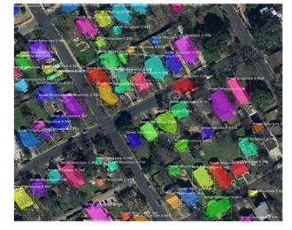
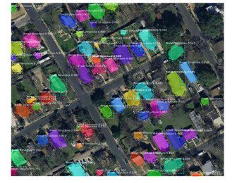
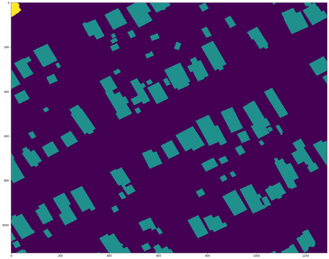
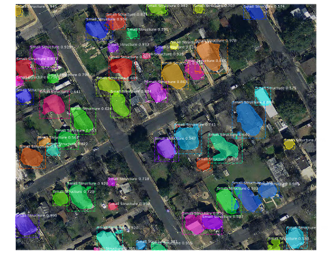

In the past decade, the rise of the maritime piracy and attacks on the transportation ships has cost the global economy several billion dollars. To counter the threat, researchers have proposed agent-driven modeling to capture dynamics of maritime transportation system, and to score the potential of a range of piracy countermeasures but lacks real-time update for situational context. Combining information from on-board sensors with intelligence from external sources for early piracy threat detection has shown promising results. Such systems can benefit from the early warning that “boat is approaching the ship and accelerating”, “boat is circling the ship,” or “two boats are diverging close to the ship”. Existing on-board cameras capture these activities, but there is no automated processing of said patterns to inform early warning system. Visual data feed is used by crew only after they have been alerted of possible attack: camera sensors are cheap but transforming the incoming video data streams into actionable items still demands expensive human processing. In this paper, we propose to apply the recent advances in deep learning to design and train algorithms to localize, identify, and track small maritime objects under varying conditions (e.g. snowstorm, high glare, night), and computing with words to identify threating activities where lack of training data prohibits the use of deep learning.

Give us your data!
Now more than ever, we are looking to test our algorithm on various real world data.